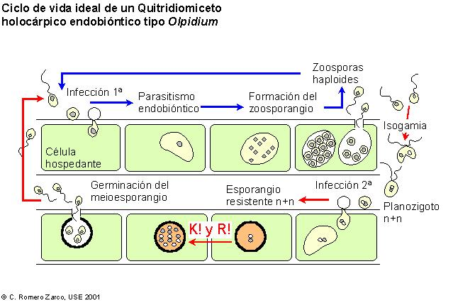
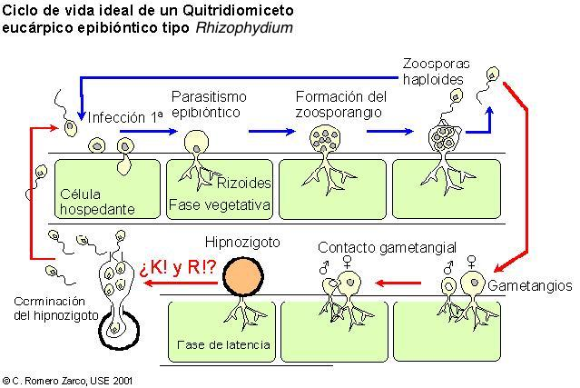
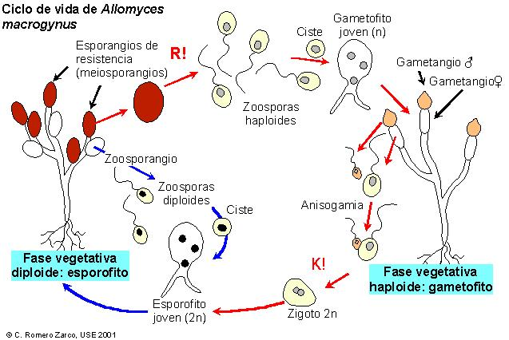

| División Eumicotas (Eumycota) | |||
| Clases | Pared celular | Micelio | Diásporas |
| Quitridiomicetos | Quitina + poliglucanos | Sifonal | Zoosporas opistocontas, quistes e hipnozigotos |
| Zigomicetos | Aplanosporas y zigosporas | ||
| Ascomicetos | Septado | Conidios y ascosporas | |
| Basidiomicetos | Conidios y basidiosporas | ||
| Deuteromicetos | Conidios | ||


